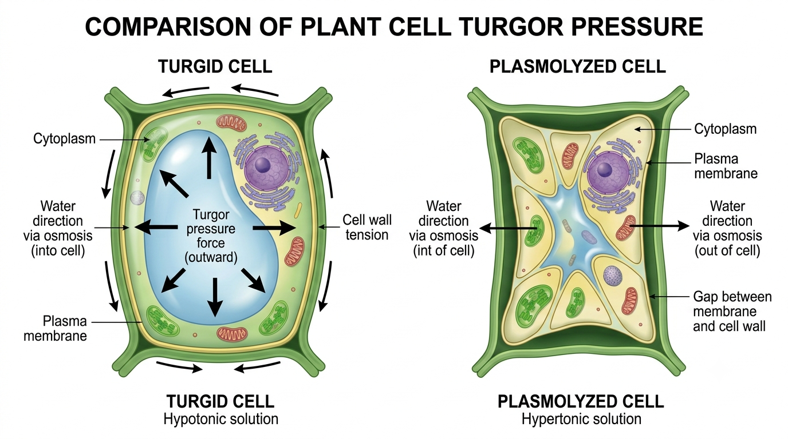
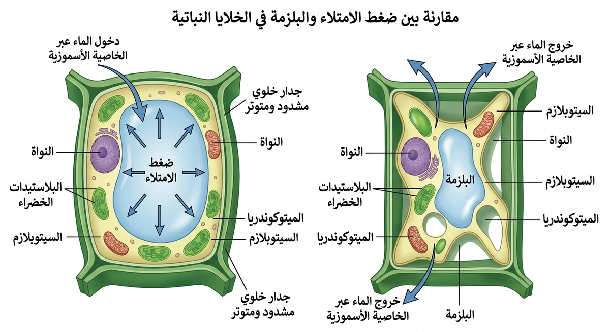
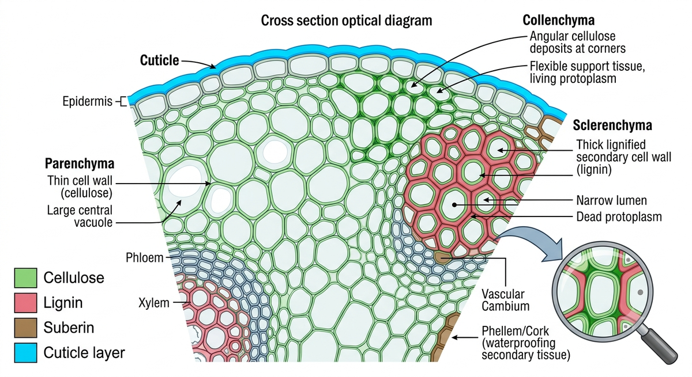
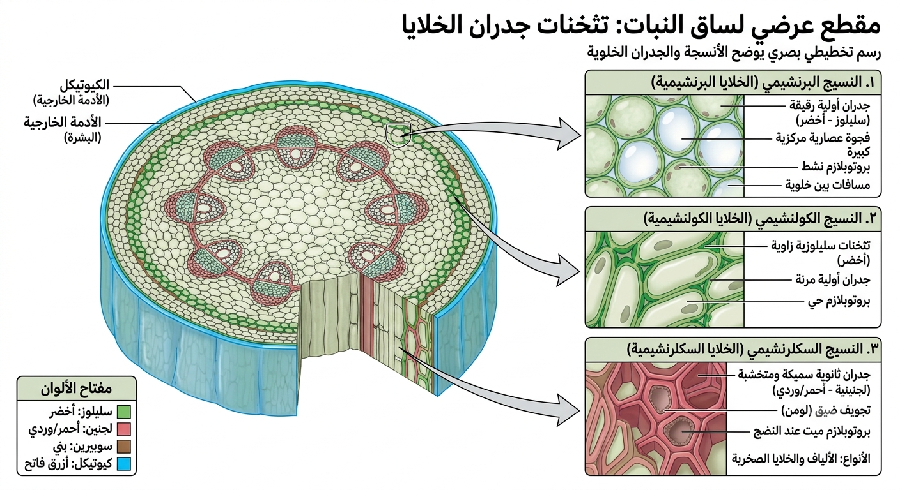
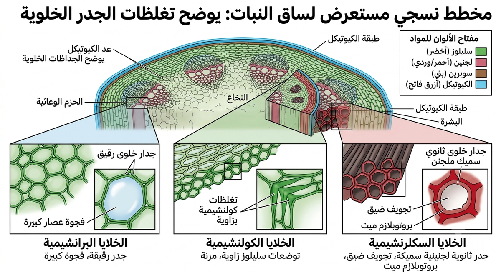

مرحباً بك يا بطل الأحياء 👋
جاهز لتجربة علمية مبتكرة لتثبيت درس الدعامة في النبات؟
الدرس الأول: الدعامة في النبات
نظام مذاكرة تفاعلي شامل مبني بالكامل على مخرجات التعلم الوزارية وأسئلة كتاب الامتحان المعتمدة لضمان الفهم والربط والحفظ ثم الاستدعاء والتقييم الذاتي.
1. المفهوم العام للدعامة في النبات
يحتاج النبات، كأي كائن حي، إلى نظام يحميه، يدعمه، ويحافظ على شكله الخارجي لمواجهة الرياح والجفاف والظروف البيئية.
💡 الشرح المبسط (بالبلدي كده):
الدعامة دي هي زي الهيكل العظمي في جسم الإنسان أو عواميد البيت اللي شايل الخرسانة، بتحفظ شكل النبات وتخليه واقف صلب وقادر يستحمل الهوا والظروف الجوية من غير ما يتكسر أو يتدمر.
🔬 الشرح العلمي الدقيق:
مجموعة من الأجهزة والأنسجة والآليات الفيزيائية والكيميائية المتكاملة التي تدعم النبات وتحافظ على شكله وتعمل على حمايته وتدعيمه وضمان استقراره الميكانيكي في البيئة.
2 & 3. الدعامة الفسيولوجية والخاصية الأسموزية
الدعامة الفسيولوجية هي دعامة فيزيائية مؤقتة تعتمد في أساسها على حركة الماء بالتناضح والخاصية الأسموزية عبر أغشية الخلايا الحية.
💡 الشرح المبسط:
الخلية بتشرب المياه زي الإسفنجة بالظبط! لما المياه تدخل، فجوتها العصارية بتتملي وتكبر وتضغط على الخلية من جوه لبرة، فتتنفخ وتبقى مشدودة وجدارها ناشف وقوي زي كورة الكاوتش المنفوخة على الآخر.
🔬 الشرح العلمي الدقيق:
دعامة تناضحية مؤقتة تتناول الخلية ككل، وتعتمد كلياً على وجود الماء ودخوله بالخاصية الأسموزية إلى الفجوة العصارية نتيجة زيادة تركيز الذائبات (السكريات والأملاح) بداخلها مقارنة بالوسط الخارجي للخلية.
"الماء يحب الملح ويمشي وراه!"
الخاصية الأسموزية هي حركة جزيئات الماء من الوسط الأعلى تركيزاً للماء (الأقل ذائبات) إلى الوسط الأقل تركيزاً للماء (الأعلى ذائبات) عبر غشاء شبه منفذ.
4 & 5. الفجوة العصارية وضغط الامتلاء (Turgor Pressure)
الفجوة العصارية هي المخزن الرئيسي للمحلول السكري والأملاح داخل الخلية النباتية الحية، وهي المحرك الأساسي لتوليد ضغط الامتلاء.
💡 الشرح المبسط:
الفجوة دي عاملة زي البالونة اللي جوه الكرتونة. لما بننفخ البالونة بمية، بتكبر وتزق كل الألعاب والأشياء اللي حواليها وتضغط على حيطان الكرتونة من برة فتنشف وتفرد نفسها.
🔬 الشرح العلمي الدقيق:
عند دخول الماء للفجوة العصارية بالأسموزية، يزداد حجم العصير الخلوي بداخلها، فيولد ضغطاً هيدروستاتيكياً يُعرف بـ ضغط الامتلاء (Turgor Pressure). يضغط هذا الضغط على البروتوبلازم المحيط بالفجوة ويدفعه للخارج باتجاه الجدار الخلوي.


6 & 7. توتر الجدار الخلوي والعوامل المؤثرة
الجدار الخلوي هو الغلاف الخارجي المرن للخلية النباتية، والذي يتحول بفضل ضغط الامتلاء إلى حالة من الصلابة والشد.
🔬 توتر الجدار الخلوي:
هي حالة التمدد والتصلب التي يصل إليها الجدار الخلوي نتيجة دفع البروتوبلازم له من الداخل للخارج بفعل ضغط الامتلاء المرتفع. عندما يتمدد الجدار تماماً، يتوقف تمدده ويكتسب النبات دعامته ويصبح صلباً مستقيماً.
📊 العوامل البيئية والفسيولوجية المؤثرة:
| العامل المؤثر | طبيعة العلاقة والتأثير | التوضيح البيولوجي للامتحان |
|---|---|---|
| عملية الامتصاص (عبر الجذور) | طردية 📈 | كلما امتص الجذر الماء من التربة، توفر ماء كافٍ لدخول الفجوات، مما يزيد ضغط الامتلاء وتوتر الجدر واكتساب الدعامة. |
| عملية النتح (عبر الأوراق) | عكسية مؤقتاً 📉 | النتح هو تبخر الماء من الثغور. عند زيادة النتح في فترة الظهيرة (الحرارة العالية)، يفقد النبات خلاياه جزءاً من مائها فيقل ضغط الامتلاء ويحدث ذبول مؤقت للأوراق وسوق النباتات العشبية. |
| عملية الري | مباشرة وإيجابية 💧 | ري النباتات الذابلة والجافة يعيد استقامتها وقوتها مباشرة لدخول الماء بالخاصية الأسموزية فور توفره في التربة. |
| الجفاف والحرارة الشديدة | سلبية مدمرة ☀️ | فقدان المياه المستمر دون ري يؤدي للتخلص من الدعامة الفسيولوجية كلياً، وبالتالي تذبل النباتات وتنقرض حيويتها إن طال الجفاف. |
8. الدعامة التركيبية (المفهوم والأهداف)
الدعامة التركيبية هي دعامة دائمة كيميائية المنشأ، تعتمد على ترسيب النبات لمواد كيميائية صلبة وقوية على جدر خلاياه لتعزيز متانتها وحمايتها.
💡 الشرح المبسط:
النبات بيأسس لنفسه حيطة قوية وسد منيع من مواد صلبة، بيبنيها ويدهنها على جدران الخلايا من برة أو جوه. المواد دي بتثبت ومبتزولش أبداً حتى لو النبات عطش، علشان تحمي الأعضاء وتمنع فقد المية.
🔬 الشرح العلمي الدقيق:
دعامة كيميائية بنيوية دائمة تتناول جدر الخلايا أو أجزاء منها، وتعتمد على ترسيب بعض المواد الصلبة وغير المنفذة للماء (السليلوز، اللجنين، الكيوتين، السيوبرين) لزيادة قدرة خلايا النبات الخارجية على تحمل الضغوط، وإكسابها الصلابة وحفظ مياهها الداخلية.
🛡️ الهدف 1: الحماية
حماية الأنسجة النباتية الداخلية والمحافظة عليها من هجمات الميكروبات والعوامل الميكانيكية.
💪 الهدف 2: الصلابة والقوة
إكساب خلايا النبات الصلابة والقوة الكافية للوقوف والتدعيم ومقاومة التيارات الهوائية.
💧 الهدف 3: منع فقد الماء
منع نفاذ وتبخر مياه الأنسجة الداخلية وحماية الدعامة الفسيولوجية للنبات.

9 & 10. المواد المترسبة: السليلوز واللجنين
السليلوز واللجنين هما العمودان الأساسيان لإكساب جدر الخلايا النباتية الصلابة الميكانيكية والقوة الهيكلية.
🌿 السليلوز (مادة منفذة):
طبيعته: مادة كربوهيدراتية ممرضة ومغشية صلبة ومرنة في آنٍ واحد.
النفاذية: منفذ تماماً للماء (الاستثناء الأهم في مواد الترسيب).
الموقع: المكون الأساسي لجدر جميع الخلايا، ويترسب بكثافة إضافية في جدر خلايا النسيج الكولانشيمي.
الوظيفة: إكساب جدار الخلية النباتية المرونة والقوة الكافية للشد دون انكسار.
🪵 اللجنين (مادة غير منفذة):
طبيعته: مادة صلبة وقوية للغاية تترسب في جدر الخلايا الداخلية مسببة موتها.
النفاذية: غير منفذ تماماً للماء.
الموقع: يترسب داخل جدر الخلايا الاسكلارنشيمية (الخلايا الحجرية والألياف) وجدر أوعية وقصيبات الخشب.
الوظيفة: إكساب الخلايا الصلابة والقوة المطلقة لمقاومة الضغوط الميكانيكية الهائلة.

11 & 12. المواد المترسبة: الكيوتين والسيوبرين
الكيوتين والسيوبرين هما المواد الدهنية الشمعية التي يعتمد عليها النبات لمنع تبخر وفقد المياه الحيوية.
💧 الكيوتين:
طبيعته: مادة دهنية شمعية غير منفذة تترسب على السطح الخارجي للبشرة.
الموقع: يغطي طبقة البشرة في أوراق وثمار وسيقان النباتات العشبية والخشبية.
الوظيفة: تقليل فقد الماء بالنتح وحماية الخلايا الحية وحفظ ضغط الامتلاء (الدعامة الفسيولوجية).
🪵 السيوبرين:
طبيعته: مادة دهنية شمعية غير منفذة تترسب في جدر خلايا النبات الداخلية.
الموقع: جدر خلايا النسيج الفليني (في السيقان الخشبية) وجدر خلايا الاندوديرمس (شريط كاسبري).
الوظيفة: عزل وحماية سيقان الأشجار، ومنع تسرب وتبخر الماء، وتوجيه حركة الماء في الجذر.
- س = سيوبرين
- ل = لجنين
- ك = كيوتين
جميع مواد كلمة «سَلَك» هي مواد غَيْرُ مُنْفِذَةٍ لِلْمَاءِ إطلاقاً! الاستثناء الوحيد للجدار الخلوي هو «السليلوز» فهو ممر ومنفذ ممتاز للماء.

13 & 14. الأنسجة النباتية وتطبيقات الدعامة عليها
ينقسم نسيج النبات مجهرياً وبنيوياً إلى عدة أنسجة، يمتلك كل منها نوعاً محدداً من الدعامة الكيميائية أو الفيزيائية.
🟢 النسيج البارنشيمي (حي):
جدره رقيقة تحتوي سليلوز فقط دون ترسيب إضافي. يعتمد كلياً وبشكل مؤقت على وجود الماء واكتساب الدعامة الفسيولوجية.
🔵 النسيج الكولانشيمي (حي):
نسيج مغلظ بكثافة إضافية من السليلوز عند أركان الخلايا. يجمع بين الدعامة الفسيولوجية والدعامة التركيبية ليمنح عود النبات المرونة والقوة.
🔴 النسيج الاسكلارنشيمي (ميت):
نسيج ميت مغلظ تغلظاً شديداً بالسليلوز واللجنين معاً. يمنح الصلابة والقوة القصوى (مثل ألياف وبذور الكمثرى وقشور اللوز).
15. شريط كاسبري (Casparian Strip) والاندوديرمس
شريط كاسبري هو الحارس الذكي في جذر النبات، والمسؤول عن فلترة وتنظيم المياه والذائبات المتجهة لأوعية النقل.
🔬 شريط كاسبري:
شريط أو حزام مصنوع بالكامل من مادة السيوبرين غير المنفذة للماء، يوجد مغروساً في منتصف الجدر الأفقية والجانبية لخلايا الاندوديرمس (البشرة الداخلية) بجذور النبات. يعمل هذا الشريط على غلق المسار الجداري (الأبوبلاستي)، مما يجبر جزيئات الماء على المرور اضطرارياً عبر الغشاء البلازمي والبروتوبلازم الحي لخلايا الاندوديرمس لتتم فلتَرتها وتنظيم عبورها لأوعية الخشب.
16. العلاقات التكاملية بين الدعامة الفسيولوجية والتركيبية
قد تبدو الدعامتان منفصلتين في المفهوم، ولكنهما تعملان معاً في تناسق حيوي مدهش للحفاظ على استمرار حياة ونمو النبات.
💡 كيف تدعم الدعامة التركيبية استمرار الدعامة الفسيولوجية؟
الكيوتين الشمعي (دعامة تركيبية دائمية) يترسب على جدار خلايا البشرة ليكون بمثابة معطف أو ساتر عازل. هذا المعطف يقلل تماماً من معدلات تبخر المياه من خلايا النبات أثناء الحر والنتح الزائد. وبذلك، فإنه يحافظ على كميات مياه كافية داخل الفجوات العصارية لتظل خلايا النبات ممتلئة وتحتفظ بـ الدعامة الفسيولوجية الموقتة لأطول فترة ممكنة.
18. جدول المقارنة الشامل للأنسجة والمواد
أبرز مخرجات التعلم لأسئلة الامتحان في جدول واحد تفصيلي ومقارن:
| المفهوم / النسيج | نوع الدعامة | مادة الترسيب | النفاذية للماء | حيوية الخلايا | الوظيفة الأساسية للنبات | مثال تطبيقي |
|---|---|---|---|---|---|---|
| النسيج البارنشيمي | فسيولوجية فقط | سليلوز (أولي رقيق) | منفذ للماء 💧 | حي | التهوية، التخزين، والامتلاء التناضحي بالماء. | لب ثمار البطاطس، أوراق الخس الداخلية |
| النسيج الكولانشيمي | فسيولوجية + تركيبية | سليلوز مغلظ للأركان | منفذ للماء 💧 | حي | إعطاء ساق النبات المرونة والقوة ومقاومة الرياح دون انكسار. | أعواد الملوخية والنعناع والخس |
| النسيج الاسكلارنشيمي | تركيبية فقط | سليلوز + لجنين بكثافة | غير منفذ 🧱 | غير حي (ميت) | الصلابة والقوة الهيكلية الميكانيكية القصوى. | الخلايا الحجرية بالكمثرى، قشور اللوز والمكسرات |
| بشرة النبات | تركيبية وتحمي الفسيولوجية | الكيوتين (على السطح) | غير منفذ 🧱 | حي | حماية الخلايا الداخلية، وتقليل فقد الماء بالنتح والتبخر. | بشرة أوراق التفاح والبرقوق |
| النسيج الفليني | تركيبية فقط | سيوبرين (في الجدار) | غير منفذ 🧱 | غير حي (ميت) | عزل وحماية السيقان الخشبية، ومنع نفاذ الميكروبات والماء. | اللحاء الخارجي للسيقان الخشبية للأشجار |
17. ماذا يحدث إذا؟ (سيناريوهات تفاعلية)
انقر على السؤال لتكتشف الإجابة العلمية المعتمدة للامتحان:
ماذا يحدث عند وضع بذور جافة أو ثمار ضامرة (كالترمس أو الزبيب) في ماء مقطر؟
ماذا يحدث عند غمر خلية نباتية في محلول مرتفع التركيز جداً للذائبات (مثلاً 10%)؟
ماذا يحدث عند تقشير ثمرة تفاح أو برقوق طازجة وتركها في هواء جاف؟
ماذا يحدث عند ترسيب اللجنين بكثافة داخل جدر خلايا نسيج كولانشيمي؟
ماذا يحدث إذا غابت مادة السيوبرين (شريط كاسبري) من خلايا الاندوديرمس بجذور النبات؟
19. الخريطة الذهنية البصرية للدرس
استعن بهذا المخطط الشجري المترابط لتلخيص واسترجاع المفاهيم سريعاً في ذاكرتك البصرية:
💧 الدعامة الفسيولوجية
- طبيعتها: مؤقتة / تتناول الخلية ككل
- الآلية: الخاصية الأسموزية والتناضح
- التدفق: دخول الماء ← انتفاخ الفجوة ← ضغط الامتلاء ← توتر الجدار
- أمثلة: انتفاخ الترمس المنقوع / ارتخاء سوق النبات العشبي بالجفاف
🧱 الدعامة التركيبية
- طبيعتها: دائمة / تتناول جدر الخلايا
- المواد المترسبة: سليلوز، لجنين، كيوتين، سيوبرين
- الأهداف: الصلابة والقوة / منع فقد الماء / حماية الأنسجة الداخلية
- أمثلة: الخلايا الحجرية بالكمثرى / الكيوتين على بشرة التفاح
20. البطاقات التعليمية التفاعلية (Flashcards)
أداة تفاعلية رائعة مبنية على تقنيات الذاكرة؛ انقر على البطاقة لقلبها واختبار معلوماتك:
21. الاستدعاء النشط (Active Recall) للامتحانات
لا تكتفِ بالقراءة السلبية! اكتب إجابتك الخاصة في المستطيل، ثم قارنها بالإجابة النموذجية المعتمدة لتقيم نفسك وتكتشف التريكات الكامنة:
22. الاختبار النهائي المعتمد (MCQs)
اختبار تفاعلي يحاكي تماماً طبيعة أسئلة الثانوية العامة وأفكار كتاب الامتحان. اجب عن الأسئلة بتركيز واحصل على النتيجة الفورية والتفسير التفصيلي:
23. خطة المراجعة والتكرار المتباعد (Spaced Repetition)
استراتيجية علمية تضمن انتقال الدرس من الذاكرة قصيرة المدى إلى الذاكرة طويلة المدى، لتضمن تذكره بدقة ليلة الامتحان: